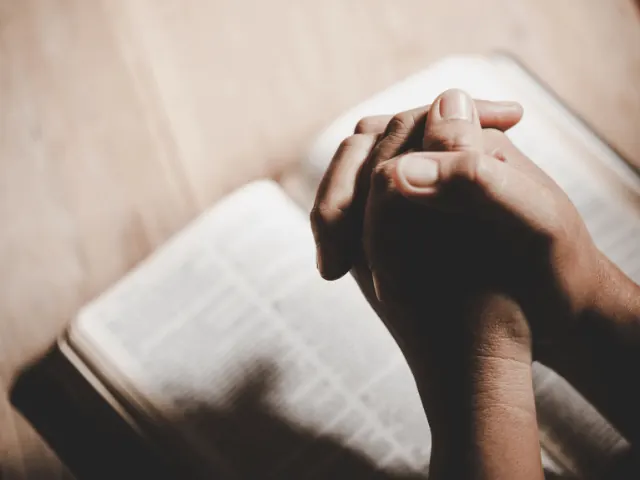
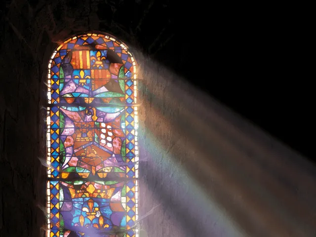
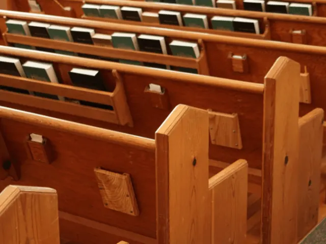
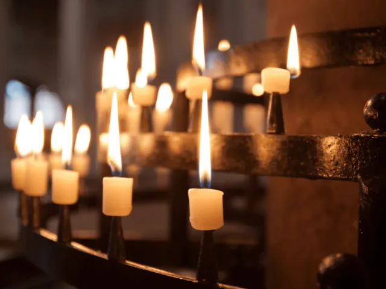
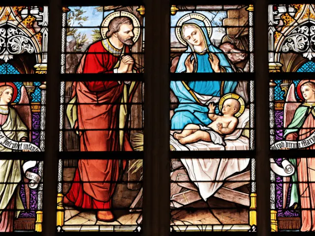
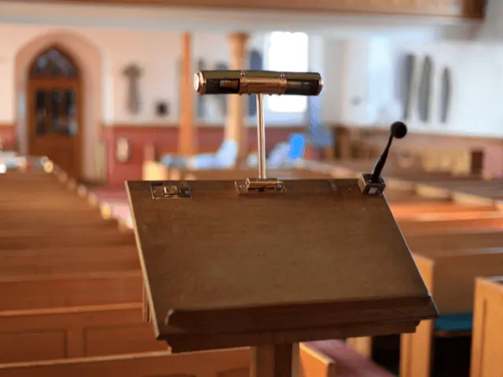
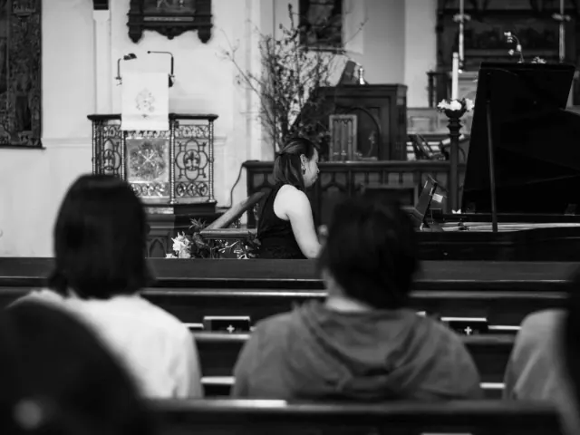
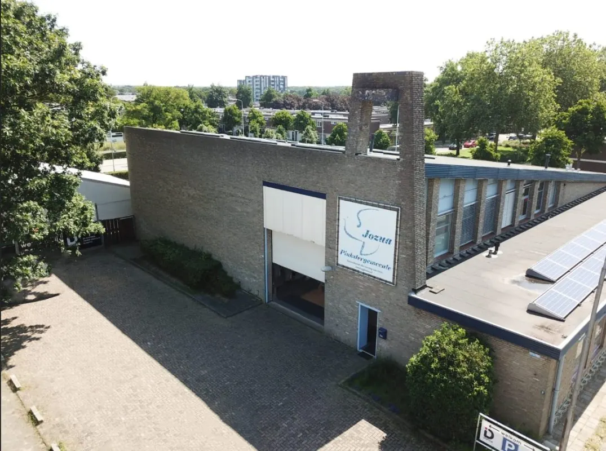

Wat zijn de meest bekende kerken in Nijmegen?
Gepubliceerd op 19 november 2022, bijgewerkt op 19 november 2024
Onderdeel van de gids Musea in Nijmegen

De stad Nijmegen telt vele kerken. Elke kerk heeft zijn eigen oorsprong en geschiedenis: van vrij recent, tot lang geleden of juist al van eeuwen geleden. De Stevenskerk in het centrum is de bekendste en ook meteen de oudste en grootste kerk van Nijmegen. De kerken hebben elk een eigen geloofsovertuiging, maar één doel hebben ze allemaal gemeen: verbinding onder de mensen. We laten je hier graag kort kennismaken met de kerken die Nijmegen rijk is. Sommige kerken in Nijmegen zijn echt een bezichtiging waard; andere zijn niet per se bezienswaardig, maar een welkome plek om een dienst bij te wonen of gelijkgestemden te ontmoeten.
Sint-Stevenskerk Nijmegen
De geschiedenis van de Grote of Sint-Stevenskerk begint in de zevende eeuw. De voorloper van de Stevenskerk, was de Gertrudiskerk, deze werd halverwege de dertiende eeuw verplaatst van het Kelfkensbos naar de huidige locatie en werd in 1272 gewijd. Het was een tijdlang de enige parochiekerk in Nijmegen. In de eerste eeuwen van zijn bestaan tot ca. 1600 werd de protestantse kerk diverse keren uitgebreid. In 1475 kreeg de kerk pauselijke toestemming voor een eigen kapittel. Het bombardement van 1944 veroorzaakte grote schade; er is 25 jaar gewerkt aan de wederopbouw.
De kerk wordt vandaag de dag gebruikt voor onder meer wekelijkse diensten, concerten op het Königsorgel, oraties en tentoonstellingen. De Stevenskerk is te bezichtigen.

Titus Brandsma Gedachteniskerk Nijmegen
De Titus Brandsma Gedachteniskerk in Nijmegen is een driebeukige kruisbasiliek uit 1908-1909, opgetrokken in neoromaanse stijl naar ontwerp van B.J.C. Claase. In de kerk wordt pater en verzetsman Titus Brandsma herdacht. Hij werd op 26 juli 1942 in het Beierse concentratiekamp Dachau om het leven gebracht.
Het leven van de pater wordt op verschillende manieren herdacht. Zes panelen tonen de diverse fases van zijn leven; er is een kapel aan hem gewijd en er staan memorabilia tentoongesteld. De kerk draagt de naam Titus Brandsma Gedachteniskerk pas sinds 1 maart 2004, daarvoor heette de kerk Sint Jozefskerk.

Sint-Stephanuskerk Nijmegen
Deze voormalige rooms-katholieke kerk in Nijmegen-Oost (niet te verwarren met de Grote of Sint-Stevenskerk midden in het centrum!) is gewijd aan Stefanus, martelaar en patroonheilige van Nijmegen. Pierre Cuypers jr. ontwierp deze kerk in neobyzantijnse stijl met een vieringkoepel met twaalf hoeken en een voorgevel met twee torens. De kerk is in 1923 ingewijd.
Jean Colette vervaardigde de mozaïeken in de apsis, het Joseph-altaar en het Maria-altaar evenals de glas-in-loodramen. In 1993 fuseerde de Stefanusparochie met de Christus Koningparochie. De laatste eucharistieviering was op 30 december 2007, de fusie Stephanus-Christus Koning ging samen met Dominicusparochie en werd de Effataparochie in de H. Dominicus Kerk.

Maria Geboorte Kerk Nijmegen Lent
Deze kerk uit 1879 is een rijksmonument en parochiekerk, ontworpen door Gerard te Riele. Een aanpassing, het toevoegen van twee zijbeuken, gebeurde in de twintiger jaren van de vorige eeuw. Uniek is dat deze katholieke kerk als enige binnen het aartsbisdom Utrecht valt, dat door de Waal gescheiden wordt van het bisdom ‘s-Hertogenbosch.
Christelijk Gereformeerde Kerk Vrijgemaakt Nijmegen
Behalve een gebedshuis, wil deze kerk een gemeenschap zijn waar men elkaar stimuleert in het geloof. Dit wordt vormgegeven door middel van Bijbelstudies en wijkavonden. Ook niet-leden zijn van harte welkom in deze CGKV- gemeenschap.

Kruispuntkerk Nijmegen
Deze rooms-katholieke kerk wordt gebruikt voor zijn oorspronkelijk doel: het is een plek voor gezamenlijke eucharistieviering, om elkaar te ontmoeten, voor elkaar te zorgen en om te bidden en te leren. Iedere gedoopte kan vanuit zijn eigen roeping een bijdrage en verantwoordelijkheid nemen in de geloofsgemeenschap.
De Kruispuntkerk is een van de acht kerken binnen de samenwerking van de rooms-katholieke parochie Heilige Drie-eenheid. De andere kerken binnen deze parochie zijn de Cenakelkerk, de Groenestraatkerk, de Lourdeskerk, de O.L.V. van het Heilig Hart, de Ontmoetingskerk, de H. Antonius Abtkerk Malden en de Sacramentskerk.
Klooster Brakkenstein / Sacramentskerk Nijmegen
Het moederhuis van de Congregatie van het Allerheiligst Sacrament in Nederland is gehuisvest in Klooster Brakkenstein. De paters van het Allerheiligst Sacrament bouwden op het terrein een klooster, dat werd ingewijd in 1908. De bijbehorende kapel was niet openbaar. Acht jaar later, in 1916, werd een openbare kerk ingewijd. In 1965 en 1989 vonden nog enkele verbouwingen plaats. In 2010 is het oude complex afgebroken en verrees de Sacramentskerk, die in 2011 werd ingewijd. De glas-in-loodramen naast het altaar stammen nog uit de vroegere kerk.

Petrus Canisiuskerk Nijmegen
In de 14e eeuw stond op de plek waar nu de Petrus Canisiuskerk (ook wel Molenstraatkerk genoemd) staat een regulierenklooster. Door de eeuwen heen had de kerk te kampen met verwoesting en leegstand. De katholieken namen de kerk In 1818 weer in gebruik en heette in de periode 1821-1925 Ignatiuskerk. Eind negentiende eeuw kwam er een nieuw, neogotisch gebouw (1894-1896) dat in 1898 werd ingewijd. In 1925, het jaar van de heiligverklaring van Nijmegenaar Petrus Canisius, kreeg de kerk diens naam. Het bombardement van Nijmegen in 1944 verwoestte een deel van het kerkgebouw; hiervoor kwam een nieuw gebouw in de plaats (1958-1960) dat verbonden werd met het overeind gebleven transept en koor.
Byzantijnse Kapel Nijmegen
De Byzantijnse Kapel werd in 1936 tegen een 19e-eeuws klooster aan gebouwd; de zusters van Johanna de Lestonnac betrokken deze kapel in 1937. De kapel laat een mix van bouwstijlen zien. Karakteristiek voor deze kapel zijn de in metselwerk uitgevoerde bogen rond de entree en het koperen torentje op het dak van de kapel. De oosterse inrichting met iconen en symbolen stamt uit 1988. De Servisch- orthodoxe en Russisch-orthodoxe parochie gebruiken de kapel voor hun diensten.

Kerk van de Nazarener Nijmegen
Deze kerk in Nijmegen zegt over zichzelf: “Als kerk willen wij een baken zijn voor de mensen in de buurt en daarbuiten. Een plek waar iedereen zich ongeacht persoonlijke ontwikkeling, omstandigheden, leeftijd of maatschappelijke positie thuis en welkom voelt. Waar onvoorwaardelijke liefde, dankbaarheid en verbondenheid centraal staat.”
OLV Lourdeskerk
Deze kerk werd in 1923 gesticht vanwege de groei van het aantal parochianen in de Groenstraatkerk en ingewijd in 1925. Het gebouw is een ontwerp van H. Thunissen en opgetrokken uit bakstenen. De OLV Lourdeskerk heeft een breed middenschip en op de viering een koepel. Oorspronkelijk zouden aan de voorkant twee torens verrijzen, maar deze zijn er niet gekomen.
De Lourdeskerk is sinds 2012 een van de acht kerken binnen de fusie van de rooms-katholieke parochie Heilige Drie-eenheid. De andere kerken binnen deze parochie zijn de Cenakelkerk, de Groenestraatkerk, de Kruispuntkerk, de O.L.V. van het Heilig Hart, de Ontmoetingskerk, de H. Antonius Abtkerk Malden en de Sacramentskerk
Dominicus Kerk Nijmegen (Dominicuskerk)
Deze rooms-katholieke kerk is in 1951 gebouwd en verving de Dominicaner in het centrum van de stad, die in de oorlog flink beschadigd was geraakt. Het ontwerp van deze kruiskerk van baksteen en beton in de stijl van de Bossche School is van architect T. Nix. Het parochiecomplex aan de voorzijde is ook van zijn hand. Aan de zuidkant staat een klokkentoren en aan de oostkant is de halfronde apsis gebouwd. De glas-in-loodramen zijn van de hand van E. Laudy, de eerste zes in de zijtransepten zijn geplaatst in 1962; tussen 1988 en 1993 kwamen er nog tien in de zijbeuken bij. In 1994 is het Blank-orgel uit de Utrechtse Sint-Aloysiuskerk in de Nijmeegse kerk geplaatst. De kerk is sinds 2006 gemeentelijk monument.

Ontmoetingskerk
De Ontmoetingskerk is sinds begin jaren zeventig het thuis van een bloeiende samenwerking tussen de katholieke en protestantse gemeenschap. Inmiddels zijn beide onderdeel geworden van de Protestantse Gemeente Nijmegen en de Parochie Heilige Drie-eenheid. De Ontmoetingskerk ziet zichzelf als het kloppend hart van Dukenburg. De activiteiten zijn dan ook niet alleen voor leden van de kerkgemeente, maar voor iedereen die op zoek is naar zingeving of ondersteuning.
De overige kerken in deze samenwerking zijn: Cenakelkerk, Groenestraatkerk, Kruispuntkerk, Lourdeskerk, OLV van het Heilig Hart, H. Antonius Abtkerk Malden, Sacramentskerk
Lutherse Kerk
Het ontwerp van dit lutherse kerkje is van architect D. Semmelink. In 1896, toen het gebouwd is, zag het er nog heel anders uit. In 1929 kwam er een torentje bij voor de klokken van de oorspronkelijke lutherse kerk. In 1959 werd de lutherse kerk aan de Grotestraat gesloopt; hieruit is een tweetal elementen overgebracht naar deze kerk. Het orgel – gebouwd door M. van Deventer – uit 1756 en daarmee het oudste orgel van Nijmegen en de kansel, die dateert uit 1671. Vanwege het eeuwenoude orgel is het lutherse kerkje een rijksmonument.
Maria Geboortekerk Nijmegen
In 1894 verrees hier naar ontwerp van J. Kayser een hulpkerkje van de Dominicuskerk aan de Broerstraat, gevolgd door een uitbreiding in 1901; Kayser ontwierp hiervoor een middenschip in neogotische stijl. De hulpkerk werd in 1923-1924 zelfstandig en er kwamen nog een koor met dwarsschip en een nieuwe voorgevel met traptorentjes bij – een ontwerp van de zoon van J. Kayser. In de kerk zijn nog oorspronkelijke neogotische elementen te vinden, zoals een kruisweg, tegelvloeren en meubilair. Momenteel zijn de kelders van het kerkje in gebruik voor onder meer, muziekrepetities, discussiegroepen en kinderopvang.
Deze Nijmeegse kerk is een monumentaal bouwwerk waar een energieke en open parochiegemeenschap samenkomt en waar altijd plek is voor nieuwe gezichten. Naast gebeden, liturgie en eucharistie is er ook plek voor diverse andere leerzame activiteiten.
De Deur
Een dynamische en gedreven kerk in Nijmegen waar iedereen met liefde voor Jezus zich thuis moet kunnen voelen. De gemeente is gevarieerd in leeftijd, cultuur en achtergrond.
Studentenkerk Nijmegen
De Studentenkerk is niet alleen een kerk voor studenten; deze kerk brengt een gevarieerd aanbod met als centraal thema geloofsverdieping. Je kunt in deze kerk mensen met allerlei achtergronden ontmoeten of terechtkunt voor een persoonlijk gesprek.

Pinkstergemeente Jozua Nijmegen
Als Pinkstergemeente Jozua komen we al sinds 1986 samen in Nijmegen. Na jaren op verschillende locaties onze samenkomsten hebben gehouden, hebben we sinds 2019 een vaste plek in Nijmegen gekregen. We zijn nu gevestigd in de, in 1896 gebouwde, Petrus-Pauluskerk gelegen aan de Zijpendaalstraat 5a in de wijk Hatert. De kerk bestaat uit personen uit diverse culturen, achtergronden en leeftijden. Samen houden we veel van Jezus en willen dan ook samen die liefde van Jezus in de wijk laten zien.